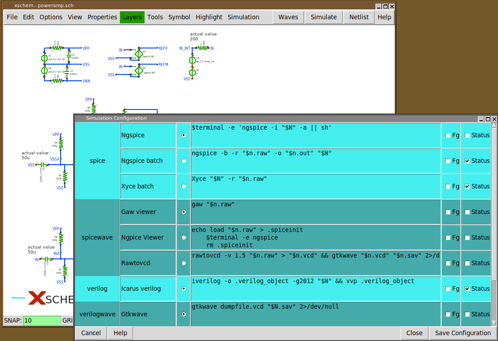

PREV
UP
NEXT
SIMULATION - 2
- External tools are configured via a 'simconf' widget.
This needs to be tuned for the host system. Config
is then saved in a simrc file, which can be edited directly
to add / remove / configure tools.
- Tools can be run in the background. Xschem optionally shows exit status, stderr and stdout
messages from batch jobs without blocking.
- Multiple Simulator / viewing tools can be configured for each simulation mode
(spice, VHDL, Verilog), a radio button sets the active tool.
- Additional tools (logic synthesis, etc) can easily be added in the future.
- No information about external tools is hard coded in Xschem.
